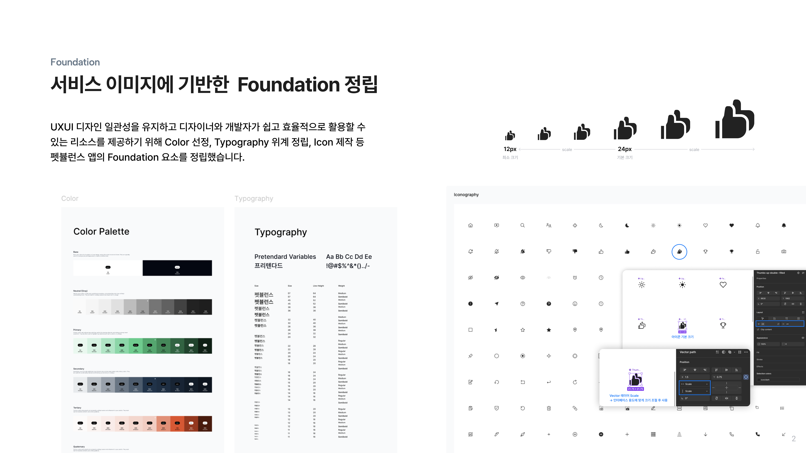
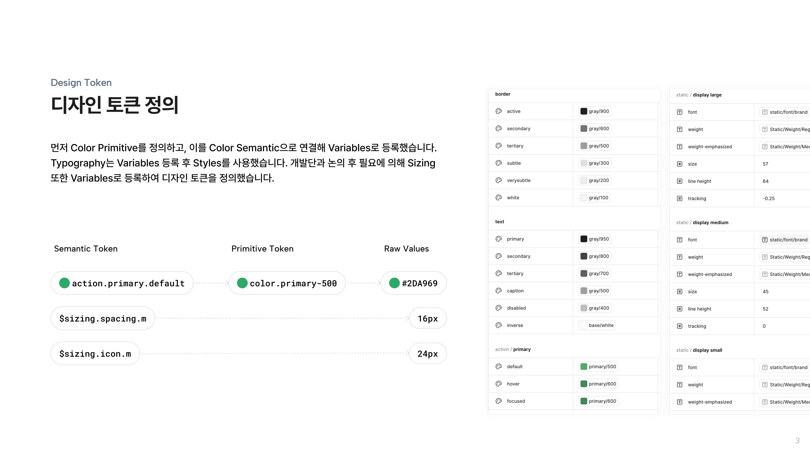
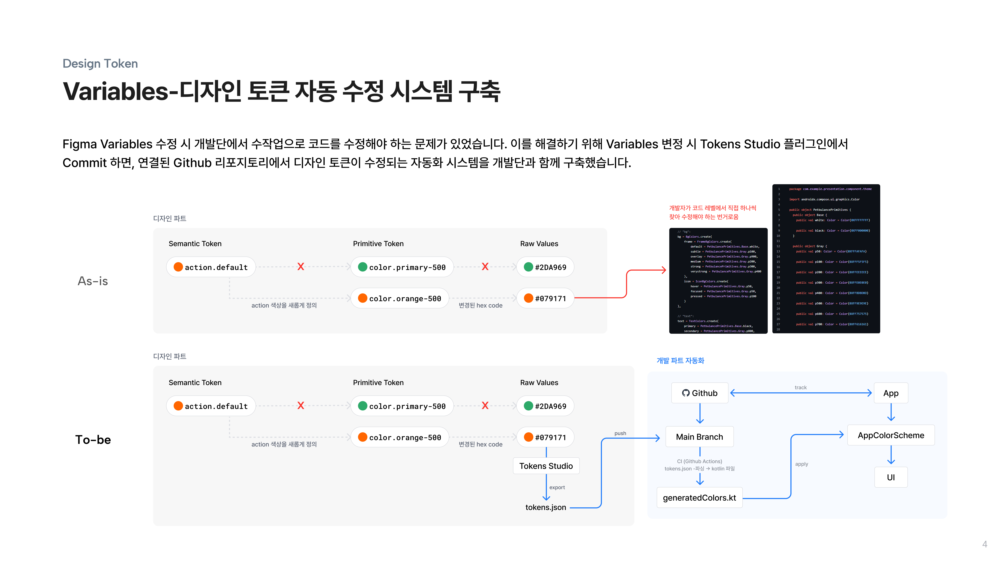
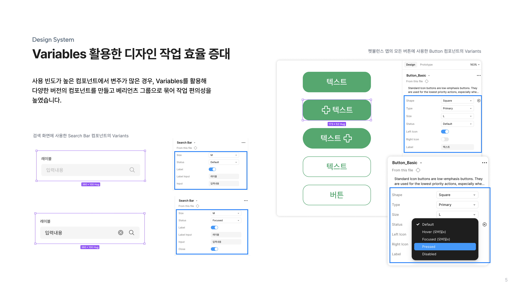
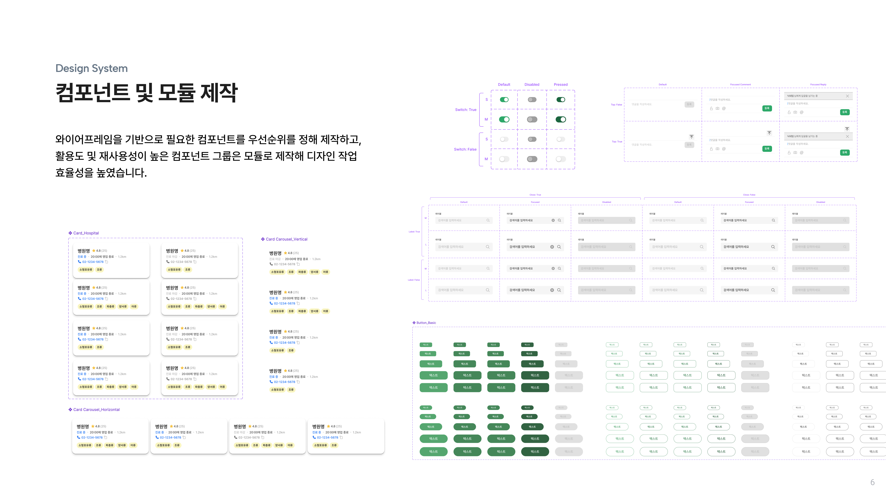
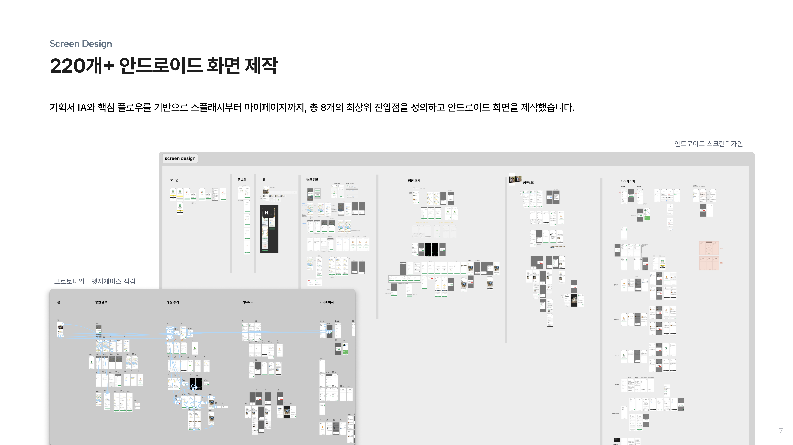
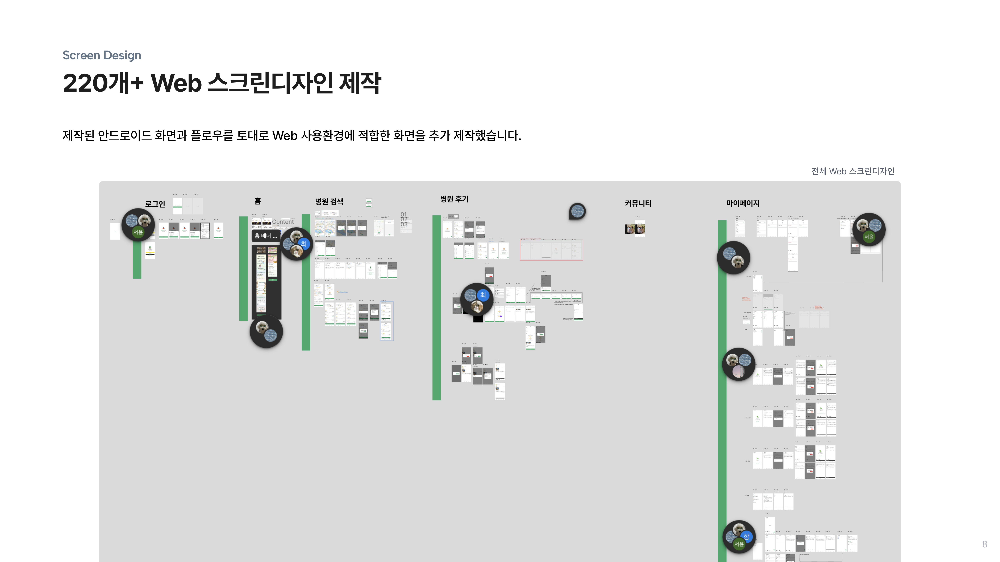
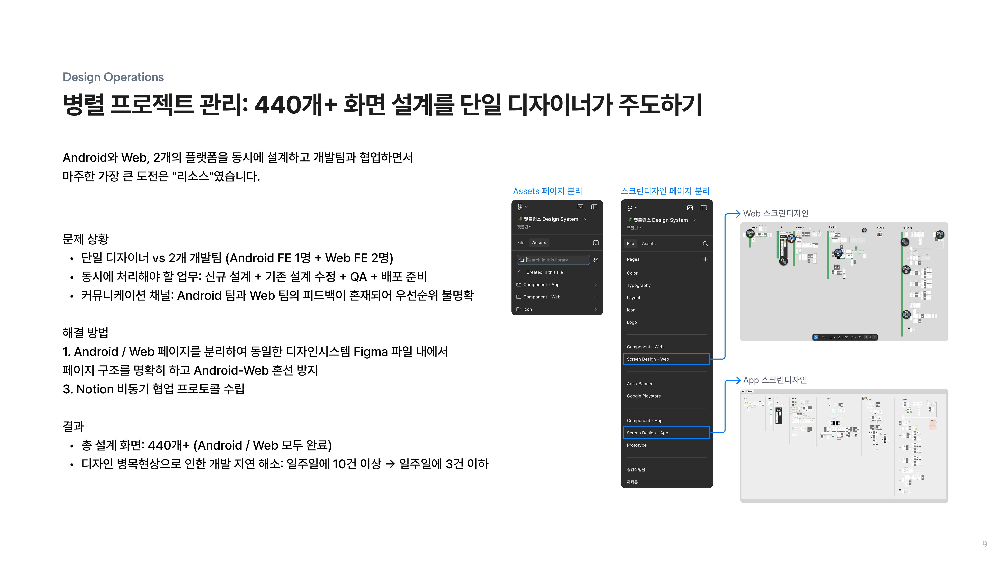
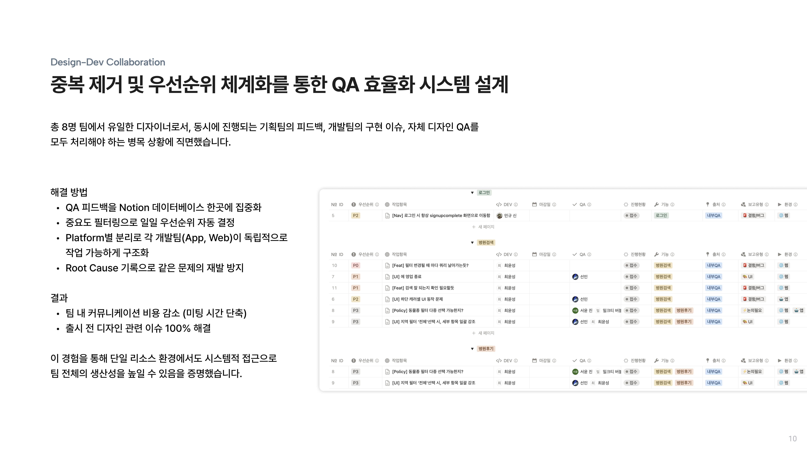

펫뷸런스
디자인시스템 구축부터 출시 후 AI 퍼소나를 활용한 개선까지

개요
펫뷸런스는 특수동물 응급 상황 시 가까운 병원을 빠르게 매칭해주는 서비스입니다. 디자인시스템 구축부터 디자인 토큰 설계, 158개 스크린디자인 제작, 개발 QA까지 프로덕트 디자인 전반을 담당했습니다.
Role
디자인시스템 구축
디자인 토큰 설계
컴포넌트/모듈 제작
스크린디자인 158개
개발 QA
Duration
팀 프로젝트 : 2025.10 - 진행중
Tools
Figma
Tokens Studio
GitHub
Discord
Foundation
서비스의 시각적 토대가 되는 Color, Typography, Iconography Foundation을 정립하여 일관된 디자인 언어를 구축했습니다.

Design Token
토큰 정의
Color Primitive에서 Semantic Variables까지 체계적인 토큰 구조를 설계하고, Typography와 Sizing 토큰을 정의하여 디자인 시스템의 기반을 마련했습니다.

토큰 자동 수정 시스템
Tokens Studio와 GitHub를 연동하여 디자인 토큰 변경 사항이 자동으로 동기화되는 시스템을 구축했습니다. 디자이너와 개발자 간의 토큰 불일치 문제를 해결하고 작업 효율을 높였습니다.

Design System
Variables 활용
Figma Variables를 활용하여 배리언츠 그룹을 체계적으로 관리하고, 디자인 작업의 효율성을 크게 높였습니다.

컴포넌트 및 모듈
우선순위 기반으로 컴포넌트를 제작하고 모듈화하여 재사용 가능한 디자인 시스템을 완성했습니다.

Screen Design
서비스 전체
총 158개의 스크린, 8개의 주요 진입점으로 구성된 서비스 전체 화면을 설계했습니다.

핵심 기능
온보딩부터 홈, 병원 검색, 병원 상세, 후기, 커뮤니티까지 사용자의 핵심 플로우를 설계했습니다.

Design-Dev QA
개발단과 긴밀하게 QA를 진행하며 엣지케이스를 보완하고, 디자인 의도가 정확히 구현될 수 있도록 커뮤니케이션했습니다.


Learnings
처음으로 실제 서비스를 위한 디자인시스템을 0부터 구축하며, 토큰 설계의 중요성과 개발자와의 협업 방식을 체득했습니다. Tokens Studio를 통한 자동화 시스템 구축 경험은 디자인-개발 간 싱크를 맞추는 효율적인 방법론을 배울 수 있는 계기가 되었습니다. 158개의 스크린을 제작하며 컴포넌트 재사용성과 일관성의 가치를 실감했으며, 개발 QA 과정에서 실제 구현과 디자인 사이의 간극을 좁히는 커뮤니케이션 역량을 키울 수 있었습니다.